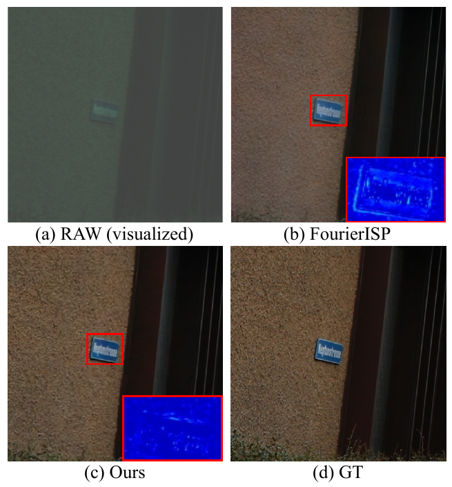
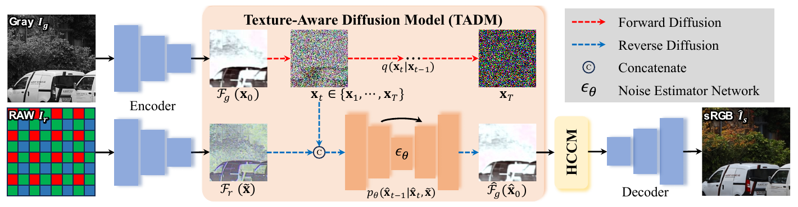
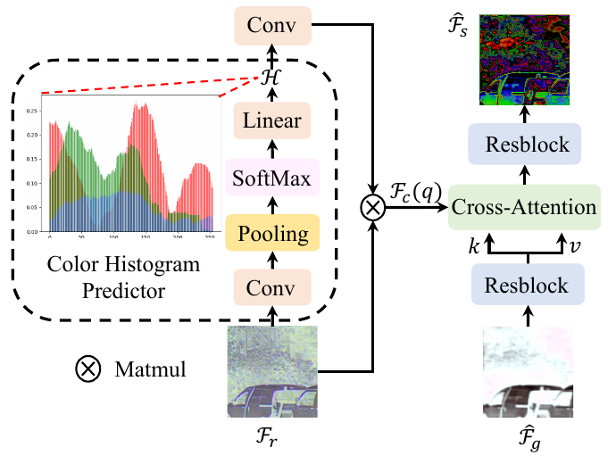
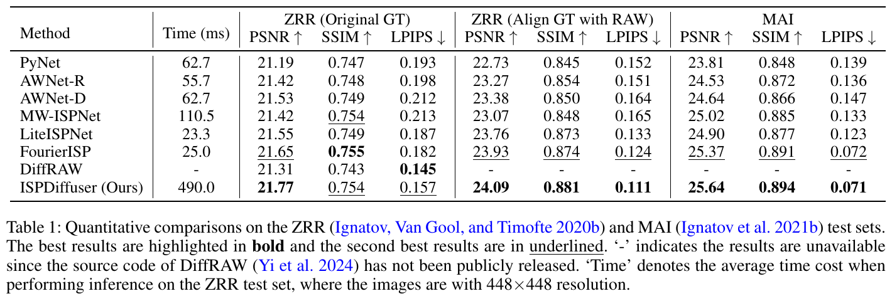
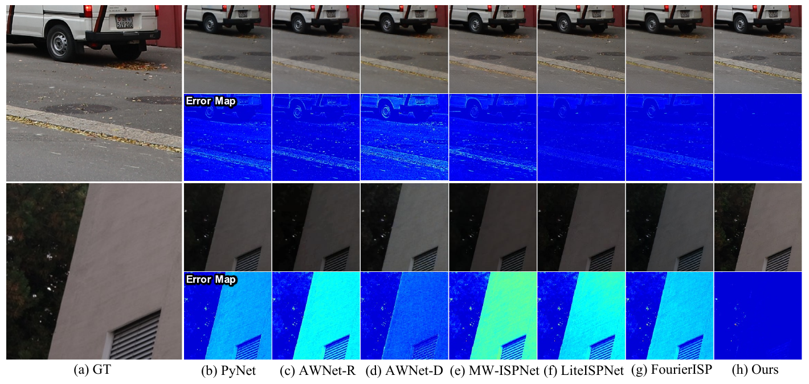
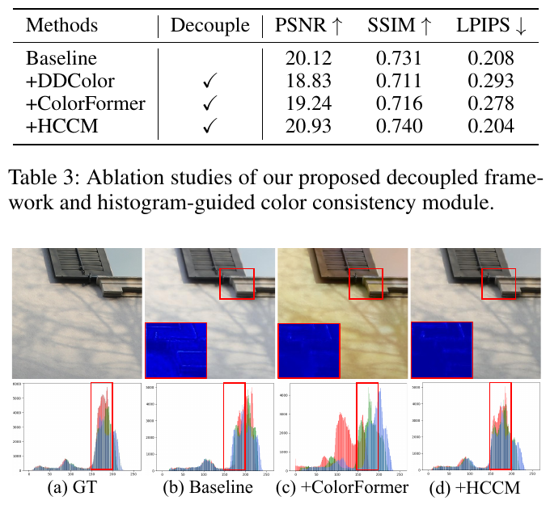
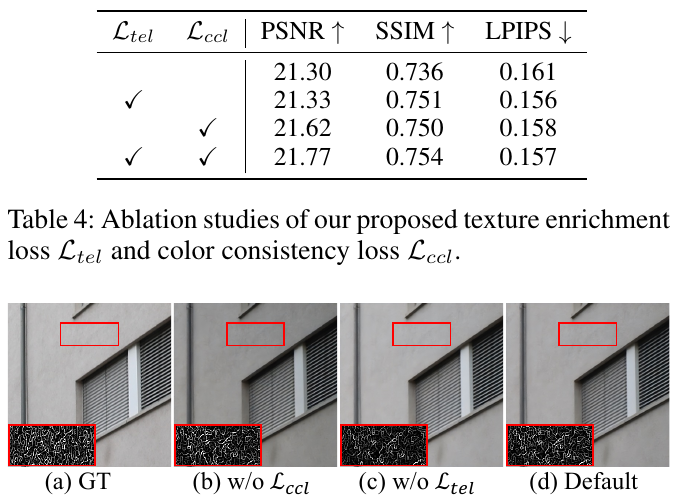

论文
ISPDiffuser：灰度空间用扩散补纹理，颜色交给「直方图」模块——RAW-to-sRGB 的颜色/纹理解耦

任务
手机 Bayer RAW → 目标单反风格的 sRGB。训练对来自两台设备，存在空间错位、视角和分辨率差异。
纹理分支（TADM）
把 GT 的灰度图编码到 1/4 分辨率潜空间，以 RAW 潜特征为条件跑条件扩散，直接预测 x₀，另加 Canny 边缘 L1。
颜色分支（HCCM）
从 RAW 特征预测一个「颜色直方图」H，与 RAW 特征相乘得到逐位置的颜色特征，作为 query 对灰度特征做 cross-attention 来上色。
代价
448×448 推理 490 ms（25 步 DDIM），是 LiteISPNet 的 21 倍；PSNR 只比 FourierISP 高 0.12–0.27 dB，主要收益落在 LPIPS / MUSIQ 这类感知指标上。
1. 出发点：细节和颜色为什么要分开学
手机传感器小、镜头小，拍出来的 RAW 噪声大、细节薄。learned ISP 这条线（PyNet、AWNet、LiteISPNet、FourierISP）想用一个网络把手机 RAW 直接映射成单反拍的 sRGB。作者认为老方法有两个毛病（§Introduction）：
- CNN 回归会把细节平均掉。 L1/L2 回归在多种可能的纹理之间取均值，结果发糊。Fig. 1(b) 里 FourierISP 的路牌就是例子。
- 扩散模型能补细节，但低频量有偏。 作者引用了 Ning et al. 2024（exposure bias）和自家的 Jiang et al. 2023，说扩散模型在颜色、曝光这类低频量上不稳。对 DiffRAW（diffraw-2024）的批评是：它拿 LiteISPNet 的输出当"颜色-位置保持条件"，结果学到的颜色和细节分布都被 LiteISPNet 框住了。
由此得出全文的设计：扩散只管灰度纹理，颜色交给一个确定性的、受全局统计量约束的模块。 在作者看来，颜色本质上是一个全局、低维、不该被随机采样的量；纹理则是局部、高维、需要生成先验的量。
这和本专项「手机照片 → 相机画质：细节与质感迁移」的思路几乎一致。我们讨论过的方案是：颜色用物理方法（DNG 色彩矩阵 / 色卡）对齐，生成模型只补高频纹理。ISPDiffuser 是这个分工在 learned ISP 文献里比较早、比较干净的一次落地，区别在于它的颜色分支也是学出来的，没有用物理标定。§6 会展开讲这个区别有多大影响。
ISP
相机里把 RAW 变成可看照片的流水线：去马赛克、降噪、白平衡、色彩校正、gamma、色调映射。
Bayer RAW
传感器原始读数，每个像素只记录 R/G/B 中的一种，排成 RGGB 马赛克，单通道。
ZRR
Zurich RAW-to-RGB 数据集：华为 P20 RAW 配佳能 5D Mark IV 的 sRGB，约 46.8k 训练对，两台设备之间有错位。
MAI
Mobile AI 2021 挑战数据：Sony IMX586 RAW 配富士相机 sRGB，12-bit。
TADM
Texture-Aware Diffusion Model，本文的灰度潜空间条件扩散分支。
HCCM
Histogram-guided Color Consistency Module，本文的上色分支。
pred_x0
扩散网络直接输出干净样本 x₀ 而不是噪声 ε；便于在 x₀ 上挂额外损失。
DDIM
确定性的隐式采样器，这里用 25 步代替 1000 步。
2. 方法：编码 → 灰度扩散 → 直方图上色 → 解码

2.1 编码器：RAW 和灰度图共用一个 1/4 潜空间
编码器由 \(k=2\) 个下采样残差块组成，把 \(H\times W\times 1\) 的 RAW 和灰度图都映射到 \(\frac{H}{4}\times\frac{W}{4}\times c\)。代码里潜空间只有 3 个通道，且过一层 sigmoid（channel_down）。256×256 的 patch 进入扩散时只有 64×64×3，扩散模型就是一个普通的 64×64 小图 DDPM。
有个细节值得注意：Bayer RAW 是 1 通道马赛克，灰度 GT 也是 1 通道，代码里它们走的是同一个输入卷积 conv_in_ch1。也就是说，编码器被要求把"带 RGGB 马赛克的手机 RAW"和"单反成片的亮度"映射到同一个空间，这正好是后面扩散要跨越的那段距离。
2.2 TADM：只在灰度上做条件扩散
前向加噪是标准 DDPM：
—— 翻译: 把干净的灰度潜特征 x₀ 逐步混入高斯噪声；第二式是一步到位的闭式写法，t 越大噪声占比越高。
逆过程以 RAW 潜特征 \(\tilde{\mathbf x}=\mathcal F_r\) 为条件。作者沿用 FlowDiffuser / DMHomo 的做法，不回归噪声，直接回归 x₀，损失写在 x₀ 上：
—— 翻译: 给定加噪的灰度特征和 RAW 特征，网络一步猜出干净灰度特征，用 L2 和真值比。论文写成"由预测噪声反推 x₀"，代码里则是网络直接输出 x₀（objective='pred_x0'），两者在数学上等价。
类比：x₀ 预测就像修复一张被泼了不同程度墨水的黑白照片，每次都要你直接交出修好的照片，而不是只说出"泼上去的墨水长什么样"。直接给出照片有个好处：可以在照片上再挂别的检查，比如下面的边缘损失。
再加一个"纹理丰富"损失：对预测和真值灰度特征分别跑 Canny，比较边缘图：
—— 翻译: 两张图的边缘位置和强度要对上；L1 对稀疏边缘比 L2 更敏感。论文说取的是 NMS 之前的梯度幅值，以保持可微。
数值直觉：64×64 的潜特征里，一条砖缝在 Canny 图上是一串幅值约 0.3 的像素。如果扩散把它抹平，L2 内容损失只增加很少，因为砖缝像素占比不到 2%；L1 边缘损失则会直接把这串像素的缺失记进去。这就是作者想让 \(\mathcal L_{tel}\) 起的作用。但 §4 会讲到，发布代码里这一项实际上不产生梯度。
代码里的主前向把三步串起来，训练与推理只差一行：
repo/models/ISPDiffuser.py:L111-L136 — Net.forward：编码 → 灰度扩散（训练单步 / 推理 25 步 DDIM）→ HCCM + 解码
def forward(self, x, y_gray=None, y=None):
data_dict = {}
output = self.AE(x,y_gray=y_gray, y=None, pred_y_gray=None)
gt_gray_fea_down, raw_fea_down = output['gt_gray_fea_down'], output['raw_fea_down']
data_dict['gt_gray_fea'] = gt_gray_fea_down #diff loss
raw_fea_down = utils.data_transform(raw_fea_down)
b,c,_,_ = raw_fea_down.shape
if self.training:
assert gt_gray_fea_down is not None
gt_gray_fea_down_norm = utils.data_transform(gt_gray_fea_down)
pred_gt_gray_fea_down = self.diffusion_model(gt_gray_fea_down_norm, x_cond=raw_fea_down)
else:
pred_gt_gray_fea_down = self.diffusion_model.sample(batch_size=b,x_cond=raw_fea_down)
pred_gt_gray_fea_down = utils.inverse_data_transform(pred_gt_gray_fea_down)
output = self.AE(x=x,y_gray=None, y=y, pred_y_gray=pred_gt_gray_fea_down)
recon_gt_img = output['recon_gt_img']
recon_fea4 = output['recon_gt_fea_ori']
gt_fea_ori = output['gt_fea_ori']
pred_hist = output['pred_hist']
gt_hist = output['gt_hist']
训练分支 self.diffusion_model(...) 只做一次随机 t 的 x₀ 预测（ddm.py:L822-L833 → p_losses 直接返回 model_out），然后把这个单步 x₀ 送进 HCCM 和解码器，并在最终图像上算损失。推理分支走 25 步 DDIM。所以解码器在训练时见到的是"各种噪声水平下单步猜出的 x₀"，推理时见到的是"25 步迭代精炼后的 x₀"，两者分布不同。论文没有讨论这个训练/推理差异。
2.3 HCCM：用"颜色直方图"给灰度特征上色

论文的设计思路：直方图描述"一张图里各种颜色各占多少"，是全局、低维、和空间排布无关的统计量，适合约束整体色调。光有直方图不知道颜色该放在哪里，所以再乘上 RAW 特征，把全局分布"投影"回每个位置：
—— 翻译: 先从 RAW 特征猜出 R/G/B 三个通道各 256 个灰阶的占比，再与 RAW 特征做矩阵乘，得到"这里大概该是什么颜色"的逐像素特征。
—— 翻译: 预测的直方图要贴近 GT sRGB 特征的直方图 Hₛ；上完色的特征要贴近 GT 的彩色特征。λ₂ = 0.01。
代码实现与论文描述差得比较多：
repo/models/basic_model.py:L13-L44 — color_extra：论文里的 Color Histogram Predictor + Eq. 6
class color_extra(nn.Module):
def __init__(self, channels):
super(color_extra, self).__init__()
self.block1 = nn.Sequential(nn.Conv2d(channels, 256, kernel_size=1, stride=1),
nn.AdaptiveAvgPool2d((channels, 1)),
nn.Softmax(dim=2))
self.linear = nn.Linear(256, channels)
self.conv_out = nn.Conv2d(channels, channels, kernel_size=3, stride=1, padding=1)
self.relu = nn.LeakyReLU()
def forward(self, raw, gt=None):
b, c, h, w = raw.shape
hist = self.relu(self.linear(self.block1(raw).permute(0, 3, 2, 1).squeeze(1)))
if gt is not None:
gt_hist = self.relu(self.linear(self.block1(raw).permute(0, 3, 2, 1).squeeze(1)))
else:
gt_hist =None
raw_reshape = rearrange(raw, 'b c h w -> b c (h w)')
color_fea = hist @ raw_reshape
color_fea = rearrange(color_fea, 'b c (h w) -> b c h w', h=h, w=w)
color_fea_out = self.relu(self.conv_out(color_fea))
return color_fea_out, hist, gt_hist
逐行对一下形状。这里 channels=256，RAW 特征是 channel_up 之后的 \(b\times256\times h\times w\)：
block1：1×1 卷积到 256 通道 →AdaptiveAvgPool2d((256,1))把空间维池化成 256 行 × 1 列（宽度被平均掉，高度被重采样到 256）→ 沿这 256 行做 softmax。所以每个通道得到的是一个"沿图像竖直方向的行剖面分布"，并不是像素值的直方图。permute + squeeze + Linear(256→256)之后，hist的形状是 \(b\times256\times256\)。它是一个可学习的 256×256 通道混合矩阵，不是论文写的 \(3\times256\) RGB 直方图。整个仓库也找不到任何torch.histc或显式的直方图计算。hist @ raw_reshape：用这个矩阵对 RAW 特征做通道混合，再接一个 3×3 卷积。顺序也和 Eq. 6 的 \(\mathrm{Conv}(\mathcal H)\times\mathcal F_r'\) 相反，代码是先乘再卷积。- L33 是最要紧的一处：
gt_hist用的是self.block1(raw)，和 L31 的hist完全是同一个表达式，输入同样是raw，gt只被用来判断is not None。于是 \(\mathcal L_{ccl}=\lVert\mathcal H-\mathcal H_s\rVert_2\) 在发布代码里恒等于 0，梯度也为 0。
上色用的 cross-attention 是 Restormer 式的"转置注意力"：注意力矩阵是 \(c\times c\) 的通道间注意力，不是 \(hw\times hw\) 的空间注意力。
repo/models/basic_model.py:L59-L79, L96-L102 — Color_Attention（q 来自颜色特征，k/v 来自灰度特征）与 HCCM 主体
def forward(self, input, color):
b, c, h, w = input.shape
q, k, v = self.q_layer(color), self.k_layer(input), self.v_layer(input)
q = rearrange(q, 'b (head c) h w -> b head c (h w)', head=self.num_heads)
k = rearrange(k, 'b (head c) h w -> b head c (h w)', head=self.num_heads)
v = rearrange(v, 'b (head c) h w -> b head c (h w)', head=self.num_heads)
q = torch.nn.functional.normalize(q, dim=-1)
k = torch.nn.functional.normalize(k, dim=-1)
attn = (q @ k.transpose(-2, -1))
attn = attn.softmax(dim=-1)
out = (attn @ v)
# ...
def forward(self, gray, raw, gt=None):
out = self.blocks0(gray)
color_fea, pred_hist, gt_hist = self.color_extra(raw, gt)
out_colored = self.color_attention(out, color_fea)
out_colored = self.blocks1(out_colored)
return out_colored, pred_hist, gt_hist
q 来自颜色特征、k/v 来自灰度特征，这一点与论文一致。不过 q、k 都沿空间维 \((h\,w)\) 做了 L2 归一化，所以 attn 是 \(c/8\times c/8\) 的通道相关矩阵，输出是灰度特征通道的加权重组，每个像素用的权重相同。从效果上看，这是一种全局的、由颜色特征决定的通道重映射。这一点反而和"颜色是全局低维量"的直觉一致，只是和论文的"直方图"叙事对不上。
2.4 训练：论文说两阶段，代码是一阶段联合训练
论文 §Network Training：第一阶段用 \(\lVert I-D(E(I))\rVert_2\) 训练编码器和解码器；第二阶段冻结编码器和解码器，联合训练 TADM 和 HCCM，\(\mathcal L_{stage2}=\mathcal L_{diff}+\mathcal L_{hccm}\)。
repo/models/ISPDiffuser.py:L209-L212, L240-L253 — 实际的训练损失
output = self.model(x, y, y_gray)
diff_loss, feature_loss, content_loss, hist_loss, texture_loss = self.noise_estimation_loss(output,y)
loss = diff_loss + feature_loss + 0.01* hist_loss + 0.01* texture_loss+content_loss
# ...
def noise_estimation_loss(self, output, y):
gt_gray_fea, recon_gt_gray_fea = output['gt_gray_fea'], output['pred_gt_gray_fea']
recon_fea, gt_fea = output["recon_gt_fea_ori"], output["gt_fea_ori"]
pred_hist, gt_hist = output['pred_hist'],output['gt_hist']
recon_gt_img = output['recon_gt_img']
diff_loss = self.l2_loss(recon_gt_gray_fea, gt_gray_fea)
content_loss = self.l1_loss(recon_gt_img, y)
feature_loss = self.l1_loss(recon_fea, gt_fea)
hist_loss = self.l2_loss(pred_hist, gt_hist)
texture_loss = self.texture_loss(recon_gt_gray_fea, gt_gray_fea)
和论文的出入：
- 多了一项论文没写的 图像级 L1
content_loss（权重 1），而且所有参数（含编码器和解码器）一起训练。冻结代码在L190-L194被注释掉了，load_stage1也没有被调用。 - \(\mathcal L_{fea}\) 论文写 L2，代码是 L1。
gt_gray_fea本身由可训练的编码器产生，并没有 detach，所以扩散的"目标潜变量"和预测器在同时移动。没有图像级content_loss的话，这个设定会有塌缩到常数潜变量的风险；有了它，潜空间被迫保留足够的重建信息。- 有效的梯度来源只有
diff_loss + feature_loss + content_loss三项（原因见 §4）。
3. 结论：感知指标提升明显，保真度只是小幅领先

具体数字：
- ZRR（原始 GT）：PSNR 21.77，比 FourierISP 的 21.65 高 0.12 dB；SSIM 0.754，略低于 FourierISP 的 0.755；LPIPS 0.157，不如 DiffRAW 的 0.145。作者把输给 DiffRAW 归因于错位。
- ZRR（对齐 GT）：24.09 / 0.881 / 0.111，三项都是最优；比 FourierISP 高 0.16 dB，LPIPS 从 0.124 降到 0.111。
- MAI：25.64 / 0.894 / 0.071，比 FourierISP 高 0.27 dB / 0.003 / 0.001。
- 无参考指标（Table 2）：ZRR 上 MUSIQ 50.117，LiteISPNet 是 47.310；MAI 上 48.032，FourierISP 是 47.614。TOPIQ 在 MAI 上与 FourierISP 持平，都是 0.535。
- 用户研究（Fig. 5）：26 人、20 张图，ISPDiffuser 拿到 329 次"最佳"排名，第二名是 FourierISP，"最佳"只有 49 次。
- 速度：490 ms，LiteISPNet 23.3 ms，FourierISP 25.0 ms。

消融（全部在 ZRR 原始 GT 上）：


| 组件 | 起点 | 消融方向 | 最终选择 | 为什么（论文给出的理由 + 我的核对） |
|---|---|---|---|---|
| 是否解耦 | 像素空间直接扩散 sRGB（20.12 dB） | 灰度扩散 + 上色器 | 解耦 + HCCM（20.93 dB） | 扩散同时管颜色和细节时会曝光错、偏色（Fig. 6b）；解耦后 +0.81 dB。但 baseline 同时去掉了潜空间（k=0），所以这 0.81 dB 里"解耦"和"潜空间"两个因素混在一起 |
| 上色器 | 通用自动上色 DDColor / ColorFormer | 换成以 RAW 为条件的 HCCM | HCCM | 通用上色器看不到 RAW，只能根据语义"猜"颜色（18.83 / 19.24 dB）；HCCM 能读取 RAW 里的真实色彩信息。这一行最有说服力：颜色必须来自传感器测量，不能靠先验去猜 |
| \(\mathcal L_{ccl}\) | 无 | 加直方图 L2 | 加（+0.32 dB，21.30→21.62） | 论文说可以纠正全局偏色（Fig. 7b）。但在发布代码里该项恒为 0（§4），这一增益无法从公开代码复现 |
| \(\mathcal L_{tel}\) | 无 | 加 Canny L1 | 加（+0.03 dB，SSIM +0.015） | 论文说纹理更丰富（Fig. 7c）。发布代码里该项无梯度（§4） |
| 潜空间倍率 k | 0（像素空间） | 2 | k=2 | 论文只报告了 k=0 与 k=2；1/4 分辨率下扩散成本大约降到 1/16 |
需要指出的是，表 3 的 "+HCCM"（20.93）和表 4 的完整模型（21.77）本应是同一配置，数字却差了 0.84 dB；表 4 中两项损失都去掉的版本（21.30）也比表 3 的完整解耦版本高。论文没有说明两张表的训练设置有何不同。
4. 实现细节与「论文 vs 代码」核对
仓库只有约 2.7k 行代码。models/ddm.py 基本是 lucidrains denoising-diffusion-pytorch 的改写，核心逻辑集中在 models/ISPDiffuser.py 和 models/basic_model.py。我是静态阅读代码（本机没有 torch），下面的结论都直接来自代码文本，没有经过实际运行验证。
① 颜色一致性损失恒为 0。 repo/models/basic_model.py:L31-L35：gt_hist 和 hist 是同一个表达式，都作用于 raw。ISPDiffuser.py:L249 的 hist_loss = l2(pred_hist, gt_hist) 因此恒为 0。论文要的是"GT sRGB 特征的直方图"，应当写成 self.block1(gt)。顺带一提，即使改对，gt 的通道数也能对上（gt_fea_ori 同样是 256 通道），这个 bug 很像是复制粘贴时忘了改变量名。
② 纹理损失没有梯度。
repo/utils/get_canny.py:L75-L76, L137-L139, L152 — Canny 前向包在 no_grad 中，并且返回的是 NMS 之后的细边
@torch.no_grad()
def forward(self, img):
# ...
thin_edges = grad_mag.clone()
thin_edges[is_max==0] = 0.0
# ...
# return blurred_img, grad_mag, grad_orientation, thin_edges, thresholded, early_threshold
return thin_edges
@torch.no_grad() 让 pred_canny 不带计算图，L1(pred_canny, target_canny) 对任何参数的梯度都是 0，所以 0.01 * texture_loss 只出现在日志里，不影响训练。另外论文明确写的是"NMS 之前"（为了可微），代码返回的却是 thin_edges，也就是 NMS 之后的结果。同一个文件里其实算好了 NMS 前的 grad_mag，只是没有返回它。
③ "直方图"是 256×256 的可学习矩阵。 见 §2.3 的形状分析（basic_model.py:L17-L19, L31）。仓库里没有任何显式的直方图统计。论文 Fig. 3 画的 RGB 直方图曲线在代码里找不到对应物。
④ 评测是 best-of-10，挑选依据是 GT。
repo/models/ISPDiffuser.py:L273-L291 — sample_validation_patches：每张图采样 10 次，保留与 GT PSNR 最高的一次
for i in range(10):
pred_x = self.model(x)["recon_gt_img"]
recon_img = pred_x.permute(0, 2, 3, 1).squeeze(0).detach().cpu().numpy()
recon_img = np.clip(recon_img * 255.0, 0, 255.0).astype('uint8')
psnr_gt = peak_signal_noise_ratio(recon_img, y, data_range=255)
ssim_gt = structural_similarity(recon_img, y, win_size=11, data_range=255, multichannel=True, gaussian_weights=True)
lpips_gt = calc_lpips(recon_img, y, loss_fn_alex_v1)
if i == 0:
pred_x_save = pred_x
psnr_save = psnr_gt
ssim_save = ssim_gt
lpips_save = lpips_gt
elif i>0 and psnr_gt > psnr_save:
pred_x_save = pred_x
psnr_save = psnr_gt
ssim_save = ssim_gt
lpips_save = lpips_gt
evaluate.py:L66-L67 调用的正是这个函数，所以发布代码复现的指标是"10 个随机初始噪声里，相对 GT 最好的那一个"。这是一种 oracle 选择，部署时没有 GT 可用。DDIM 的 eta=0（ddm.py:L481），10 次采样的差别只来自初始噪声，但对一个 PSNR 只领先 0.12–0.27 dB 的方法来说，这种挑选足以改变排名。论文没有提到这个协议，490 ms 也很可能只是单次采样的耗时。我无法确认论文表格是否就是用这段代码跑出来的，但这是仓库给出的唯一评测入口。
⑤ 解码器有来自 RAW 的跳连，颜色通路并不只经过 HCCM。
repo/models/basic_model.py:L263-L272 — 解码器把 RAW 编码器的 1/2、1/4 尺度特征直接加回去
recon_fea4, pred_hist, gt_hist = self.color(pred_y_gray_ori, raw_fea_ori, gt_fea_ori)
recon_img_ori_up2 = self.up_sampling0(
self.block_up1(self.block_up0(recon_fea4) + raw_fea4))
recon_img_ori_up4 = self.up_sampling1(
self.block_up3(self.block_up2(recon_img_ori_up2) + raw_fea2))
recon_gt_img =self.sigmoid(self.conv_out_rgb(self.relu(self.conv2(recon_img_ori_up4))))
raw_fea4、raw_fea2 是 RAW 经过 feature_pyramid 后、没有经过 3 通道瓶颈的 256 / 128 通道特征。所以论文说的"纹理在灰度里生成、颜色由 HCCM 给"，在代码里是有泄漏的：解码器可以绕过 HCCM 和扩散，直接从 RAW 高维特征里取颜色，甚至取细节。论文的 Fig. 2 没有画出这两条跳连。在这种结构下，即使 \(\mathcal L_{ccl}=0\)，模型颜色仍然可能是对的，因为图像级 content_loss 会通过这些跳连把颜色学进去。这也可能是 bug ① 一直没被发现的原因。
⑥ 其他细节。
- 潜空间 3 通道 + sigmoid（
basic_model.py:L141-L156），扩散 UNet 为Unet(dim=64, channels=3)，输入是[cond, x_t]的 6 通道拼接（ddm.py:L386-L388）。GaussianDiffusion没有显式传beta_schedule，所以用的是默认的 sigmoid schedule（ddm.py:L479）。yml 里写的beta_schedule: linear实际不生效，config.diffusion根本没被读取。 - 25 步 DDIM 中的
pred_noise = pred_noise/1.001（ddm.py:L709）是一个未说明的手工缩放。 - 数据：RAW 直接读 1 通道马赛克 PNG，减黑电平并归一化（ZRR 63/1020，MAI 255/4095，
dataset.py:L52-L55, L91）；没有 pack 成 4 通道。灰度 GT 由imageio.imread(..., as_gray=True)得到（dataset.py:L88），是固定的亮度加权，不是可学习的。ZRR 训练时 GT 取文件列表的第 3 列（dataset.py:L79-L80），测试时取第 2 列，推测训练用的是预先对齐过的 GT。论文没有说明。 - 训练里没有任何对齐损失（LiteISPNet 那种光流对齐 loss），ZRR 的错位全靠预对齐的 GT 和像素级 L1 硬扛。
train.py/evaluate.py都硬编码了root_path = "/data/ISP/AAAI-25/ISPDiffuser_final_code"，开箱即用前需要改路径。
5. 批判性总结
Strengths
- 问题拆分的思路是对的。 扩散负责高熵的局部纹理，确定性模块负责低熵的全局颜色，这个直觉站得住。表 3 中"通用上色器 vs 以 RAW 为条件的上色器"之间 1.7–2.1 dB 的差距，是全文最干净的证据：颜色必须从传感器测量里读出来，不能靠语义先验去猜。
- 在 1/4 灰度潜空间里扩散很便宜。 64×64×3 的扩散对象让 4 张 2080Ti 就能训练。和 DiffRAW 相比，它不依赖另一个 ISP 网络的输出作为条件。
- 感知指标（LPIPS、MUSIQ、用户研究）的提升明显，大于 PSNR 上的提升，说明"生成纹理"确实被人眼感知到了。
- 代码和权重都已公开，仓库很小，容易读懂。正因为如此，上面这些问题才查得出来。
Limitations / open questions
- 两个"新损失"在发布代码里都不起作用（\(\mathcal L_{ccl}\equiv0\)，\(\mathcal L_{tel}\) 无梯度），而表 4 声称它们分别带来 +0.32 dB 和 +0.03 dB。要么论文实验用的是另一版代码，要么这些增益来自训练随机性。两种情况下，读者都无法用公开代码复现消融结果。
- "直方图"名不副实。 代码里是一个 256×256 的可学习通道混合矩阵，和图 3 画的 RGB 直方图、和 \(\mathcal H\in\mathbb R^{3\times256}\) 都对不上。HCCM 真正起作用的可能是"以 RAW 为条件的全局通道重映射"，而不是直方图本身。
- 评测协议有 oracle 成分。 以 GT PSNR 为准做 best-of-10，而相对 FourierISP 的领先只有 0.12–0.27 dB。我们没有单次采样的数字，也没有方差。
- 表 3 和表 4 的"完整模型"相差 0.84 dB，论文没有解释。
- 解耦并不彻底：解码器从 RAW 编码器接了两条高维跳连，颜色和细节都有绕开主路径的通道。
- 泛化有限（作者自己也承认）：一个模型只学一对"手机 → 相机"映射，换光照、换设备就要重新训练。490 ms 也离端侧部署很远。
- 训练/推理不一致：解码器训练时见的是单步 x₀，推理时见的是 25 步 DDIM 的输出。
When to use / not use
- 适合：有成对的"手机 RAW ↔ 目标相机 JPEG"数据，目标是感知质量（纹理更丰富），能接受数百毫秒的离线处理。
- 不适合：要求像素级保真（PSNR 只小幅领先，而且有 oracle 挑选）；需要实时或端侧运行；只有未配对数据；希望颜色严格可控、可解释（HCCM 是黑盒，没有物理约束）。
延伸阅读：与相似工作的交叉验证
| 工作 | 核心结论 | 关键观察 | 与本文的异 / 同 |
|---|---|---|---|
| 本文 ISPDiffuser | 颜色和纹理分开学：灰度潜空间扩散 + 以 RAW 为条件的上色 | 感知指标提升明显，PSNR 小幅领先；两个辅助损失在代码里失效 | — |
| diffraw-2024（DiffRAW, AAAI 2024） | 扩散可以给 RAW→sRGB 带来单反级感知质量 | 用 LiteISPNet 的输出作为"颜色-位置保持"条件；ZRR 原始 GT 上 LPIPS 0.145，优于本文的 0.157 | 同：都认为扩散的价值在纹理、颜色需要单独锚定。异：DiffRAW 用另一个 ISP 网络的输出锚定颜色，本文用 RAW 特征加一个学到的上色器；在 LPIPS 上 DiffRAW 反而更好 |
| liteispnet-2021（LiteISPNet, ICCV 2021） | 对错位数据，关键是对齐：GCM 全局颜色映射 + PWC-Net 光流对齐损失 | 23.3 ms；对齐 GT 上 PSNR 23.76，只比本文低 0.33 dB | 同：都把颜色当作需要全局建模的量（GCM 和 HCCM 是同一种想法）。异：LiteISPNet 显式处理错位，本文没有对齐损失，靠预对齐的 GT |
| FourierISP（He et al., AAAI 2024，本站暂无精读） | 在傅里叶域拆分风格（振幅≈颜色）和结构（相位≈细节） | 25 ms；在本文表中是第二名 | 同：同样是"颜色/结构解耦"的思路。异：FourierISP 在频域做确定性解耦，本文在"灰度 vs 彩色"维度上做解耦并引入生成模型；两者 PSNR 差距不到 0.3 dB |
分歧的可能成因：这几篇在"颜色要单独处理"上意见一致，分歧在于细节要不要靠生成，以及收益怎么衡量。PSNR 对错位和小幅偏色非常敏感，生成纹理在 PSNR 上几乎拿不到分，所以确定性方法（LiteISPNet、FourierISP）在保真指标上与扩散方法几乎打平，而扩散方法在 LPIPS / MUSIQ / 用户研究上胜出。另外，本文的评测有 best-of-10 挑选，DiffRAW 没有开源代码，四者其实不在同一个协议下比较。所以"谁更好"的结论更多取决于你看哪个指标。
相关工作
- pynet-2020 —— ZRR 数据集和 learned ISP 赛道的起点
- diffraw-2024、liteispnet-2021 —— 见上表
6. 研究启发（对「手机照片 → 相机画质」专项）
1. 颜色/纹理分离是对的，本文是一个旁证
本文最站得住的证据是表 3：同样的灰度扩散，接一个"看不到 RAW"的通用上色器会掉 1.7–2.1 dB，接一个"读得到 RAW"的上色器就涨回来。这说明颜色必须来自测量，生成先验只该碰纹理。这和专项里"颜色用 DNG 色彩矩阵 / 色卡物理对齐，生成模型只补高频"的思路完全一致。我们可以更进一步：把 HCCM 这个黑盒换成可标定的物理变换（iPhone DNG 的 ColorMatrix/ForwardMatrix → XYZ → 目标相机的逆矩阵 + 色卡拟合的 3D LUT）。这样既可解释，又不需要成对数据来学颜色。
2. 在亮度通道上做生成，可以直接照搬
"在灰度/亮度上扩散"这个做法可以直接用到专项里：在 Y（或 L*）通道上做纹理生成，Cb/Cr 由物理管线给出，最后合成。好处有三：生成模型不会把颜色带偏（扩散的低频偏差被绕开）；扩散对象从 3 通道降到 1 通道；纹理迁移的目标（目标相机的颗粒、锐度、微对比）本来就主要体现在亮度上。
3. 要防住"跳连泄漏"
本文的解码器从 RAW 编码器接了两条高维跳连，"颜色只来自 HCCM"的设计因此被架空了。这是一个通用教训：如果要靠结构来保证颜色和纹理分离，就不能给网络留一条同时携带两者的旁路。在专项里，最稳妥的分离方式不是网络结构，而是数据流：生成模型只接收和输出 Y，色度根本不经过它。
4. 局限：成对数据和单帧
本文需要"手机 RAW ↔ 目标相机"的成对数据（ZRR 约 46.8k 对），而且两台设备之间有错位，只能靠预对齐加 L1 硬扛。专项若走这条路，就得自己采成对数据，成本很高。本文也是单帧方法：手机传感器真正丢掉的信息（噪声淹没的细节）在单帧里是不可恢复的，扩散只能"编造"。专项里"多帧合成提供真实信息、生成模型只补剩下的高频"的分工更稳妥：先用多帧把可恢复的部分恢复出来，再让生成模型补那些确实无法测量的纹理。
5. 反直觉点：辅助损失失效，结果依然不错
两个"核心创新损失"在发布代码里都不起作用，模型却依然能取得 SOTA 级的数字。这提示真正起作用的是"灰度潜空间扩散 + 以 RAW 为条件的全局通道重映射 + 图像级 L1 + RAW 跳连"这个组合，而不是那两项损失。复现或借鉴时，先把这些损失修好，再做一次干净的消融，才能知道它们到底值多少。
6. 评测：先报单次采样，再报 best-of-N
生成式 ISP 评测时，要分开报告单次采样的均值 ± 方差，和任何 best-of-N 结果；best-of-N 的挑选标准必须是无参考指标，不能用 GT PSNR。专项做"像不像目标相机"的评测时，更适合用目标相机的统计量（噪声功率谱、MTF、颗粒分布）配合 FID 类分布指标，而不是对一张错位的 GT 算 PSNR。